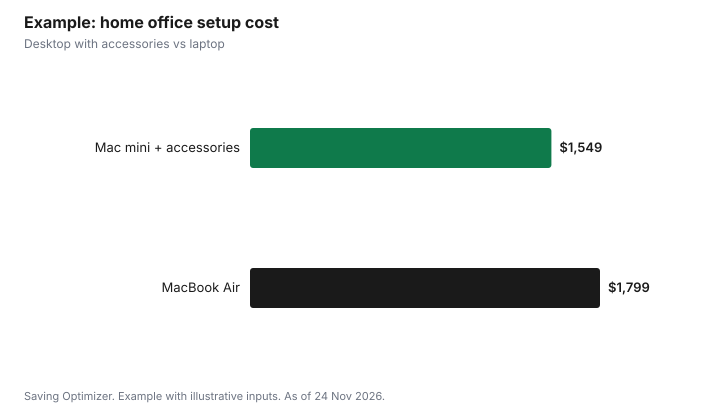

Technology · Canada
Desktop vs Laptop for a Home Office: Cost, Longevity and Repair

If your home office is one fixed desk, a desktop is often the better deal. Apple's cheapest Mac mini is $1,249 and its cheapest MacBook Air is $1,799. Add an example $300 for a monitor, keyboard and mouse and the desktop still costs less, with no battery to wear out. Pick a laptop if you move around or travel.
Key takeaways
- Mac mini from $1,249; MacBook Air 13-inch from $1,799 (apple.com/ca, checked 24 Nov 2026).
- A desktop needs a monitor, keyboard and mouse, but they last through several computers.
- Desktops have no battery to replace.
- Desktops are usually easier to repair and upgrade.
- A laptop wins if you work in different places.
Decision table
| Factor | Desktop | Laptop |
|---|---|---|
| Upfront cost | Lower for similar power, plus screen and keyboard | Higher, all-in-one |
| Battery | None to wear out | Wears out; replacement cost |
| Repairs and upgrades | Usually easier | Often hard or not possible |
| Ergonomics | Screen at eye level | Needs a stand or monitor |
| Portability | None | Work anywhere |
Make either last longer
- Buy enough memory and storage upfront.
- Use a separate monitor at eye level.
- Keep the laptop plugged in with battery limits on, if available.
- Check refurbished models.
- Claim work-from-home costs only if you qualify.

Upfront cost: an example
Example: Mac mini $1,249 plus $300 for a monitor, keyboard and mouse is $1,549. A MacBook Air starts at $1,799.
See buying a laptop, repair or replace a laptop and deducting a computer for work.
Sources
- Apple Canada, Buy Mac mini and Buy MacBook Air, checked 24 Nov 2026.
Frequently asked questions
Is a desktop cheaper than a laptop?
Usually, for similar performance, even after you add a monitor, keyboard and mouse.
Does a desktop last longer?
It often does, because it has no battery and is easier to repair and upgrade.
When is a laptop better for a home office?
When you work in different rooms or travel.
How much is a Mac mini in Canada?
From $1,249 at Apple Canada when checked on 24 Nov 2026.
Can I use a laptop like a desktop?
Yes, with a monitor, keyboard and stand.
Researched and drafted with AI assistance and fact-checked against official Canadian sources. How we create content.
Note: Prices change. Accessory costs are examples. Education only.